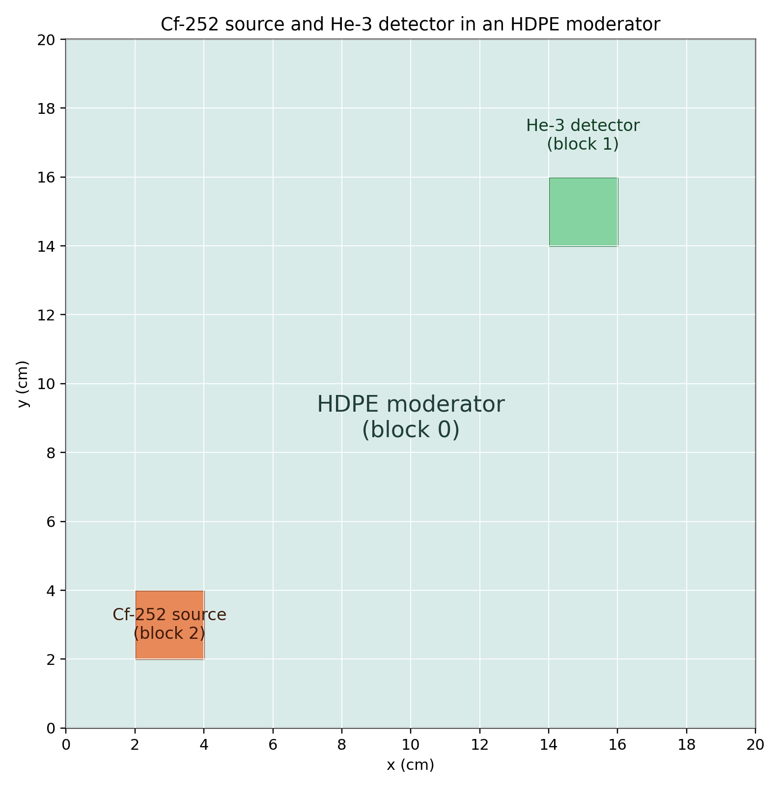
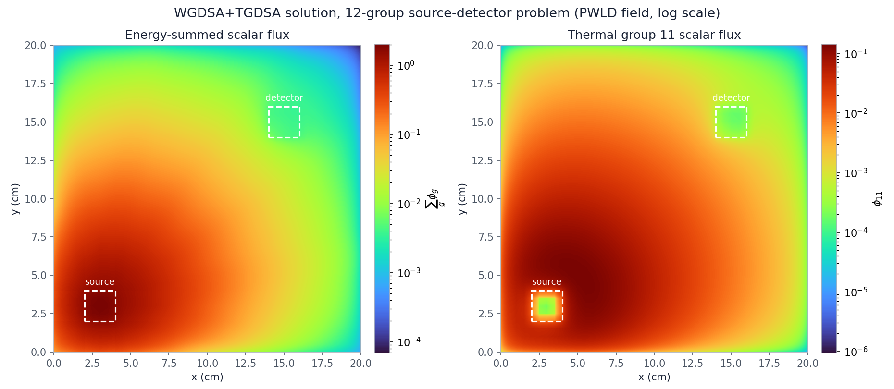

5.3.2. WGDSA and TGDSA in a Multigroup Source-Detector Problem

This tutorial compares within-group diffusion synthetic acceleration (WGDSA) and two-grid diffusion synthetic acceleration (TGDSA) in a multigroup source-detector problem. A compact volumetric source and a He-3 detector are separated by a strongly scattering HDPE moderator. Four otherwise identical solves use no acceleration, WGDSA alone, TGDSA alone, and both together.
5.3.2.1. Reduced multigroup model
The geometry follows a source–detector configuration: a 2 cm square source is centered near the lower-left corner and a separate 2 cm square He-3 detector is near the upper-right corner. The HDPE, Cf-252, and He-3 data were reduced from the 69-group WIMS tutorial library to 12 groups. Total and absorption cross sections use an unweighted fine-group average, while transfer terms are averaged over source groups and summed over destination groups. This makes the data suitable for demonstrating solver behavior, but not for design analysis. The source spectrum is a similarly collapsed Cf-252 Watt spectrum.
The reduced HDPE data include thermal upscatter: groups 4 through 11 scatter neutrons back into higher-energy groups, most strongly from group 11 into group 10 and from group 10 into group 9. The thermal groups are therefore coupled in both directions. The He-3 detector behaves very differently. Its total cross section is below \(0.01\ \mathrm{cm}^{-1}\) in groups 0 through 3, a mean free path of more than 100 cm in a 2 cm region, so it is nearly transparent to fast neutrons. In groups 4 through 11 more than 99% of its total cross section is absorption.
The mesh uses a 2-by-2 KBA decomposition, so run the generated script with four MPI processes. Sixteen directions keep the comparison inexpensive while retaining a genuine parallel transport sweep.
[ ]:
from pathlib import Path
from mpi4py import MPI
from pyopensn.aquad import GLCProductQuadrature2DXY
from pyopensn.context import Finalize
from pyopensn.logvol import RPPLogicalVolume
from pyopensn.mesh import KBAGraphPartitioner, OrthogonalMeshGenerator
from pyopensn.post import VolumePostprocessor
from pyopensn.solver import DiscreteOrdinatesProblem, SteadyStateSourceSolver
from pyopensn.source import VolumetricSource
from pyopensn.xs import MultiGroupXS
comm = MPI.COMM_WORLD
rank = comm.rank
tutorial_dir = Path(__file__).resolve().parent if "__file__" in globals() else Path.cwd()
num_groups = 12
source_spectrum = [
8.70673882298e-1, 1.27603333571e-1, 1.69874391340e-3,
2.39751217396e-5, 6.37406413603e-8, 8.61581497551e-10,
1.06916189569e-10, 2.94232444417e-10, 5.81630205686e-11,
2.77856961803e-11, 4.45769378270e-12, 1.77083905175e-12,
]
5.3.2.2. Mesh and materials
Block 0 is the moderator, block 1 is the detector, and block 2 is the source region. Logical volumes make the regions independent of external mesh files or command-line parameters.
[ ]:
def load_xs(filename):
xs = MultiGroupXS()
xs.LoadFromOpenSn(str(tutorial_dir / filename))
return xs
def make_mesh():
nodes = [0.5 * i for i in range(41)]
partitioner = KBAGraphPartitioner(
nx=2, ny=2, xcuts=[10.0], ycuts=[10.0]
)
mesh = OrthogonalMeshGenerator(
node_sets=[nodes, nodes], partitioner=partitioner
).Execute()
mesh.SetOrthogonalBoundaries()
mesh.SetUniformBlockID(0)
detector = RPPLogicalVolume(
xmin=14.0, xmax=16.0, ymin=14.0, ymax=16.0, infz=True
)
source = RPPLogicalVolume(
xmin=2.0, xmax=4.0, ymin=2.0, ymax=4.0, infz=True
)
mesh.SetBlockIDFromLogicalVolume(detector, 1, True)
mesh.SetBlockIDFromLogicalVolume(source, 2, True)
return mesh
5.3.2.3. Build one solver with optional WGDSA and TGDSA
All 12 groups are placed in one groupset, as in the graphite TGDSA tutorial, so the across-groupset iteration is a single pass. With one group per groupset, there would be no scattering between groups of the same groupset for TGDSA to correct. Classic Richardson source iteration then lags the entire scattering source by one iteration. That source has two parts that converge slowly in this strongly scattering, upscattering moderator:
Within-group scattering. WGDSA solves a diffusion correction for each group separately, driven by the change in that group’s self-scatter source.
Scattering between groups. TGDSA collapses the change in the scattering source between different groups of the groupset to a single one-group diffusion problem, then multiplies the diffusion solution by a fixed spectrum to correct every group.
TGDSA computes a separate spectrum for each material, including the detector. The spectrum is the infinite-medium shape of the slowest-converging energy error mode of the iteration being accelerated. The spectrum treats within-group scattering as converged: it is the dominant eigenvector of the Jacobi iteration over the scattering between groups, and the TGDSA residual contains only that scattering. OpenSn uses the same spectrum and residual with or without WGDSA. TGDSA therefore does not correct within-group scattering, which is exactly the part WGDSA accelerates, so the two corrections are complementary. When both are enabled, OpenSn applies them after each transport sweep in that order: the WGDSA correction first, then the TGDSA correction computed from the updated flux.
The two Boolean arguments control only apply_wgdsa and apply_tgdsa; every case uses the same iteration and tolerance.
The reported sweep count is the total for the single groupset. Wall time is split into three phases, each the maximum across ranks: model setup (cross sections, mesh, and transport problem, including any diffusion operators that OpenSn builds with the problem), solver initialization, and the source iterations themselves.
[ ]:
def solve(use_wgdsa, use_tgdsa):
comm.Barrier()
start = MPI.Wtime()
moderator_xs = load_xs("wgdsa_multigroup_moderator.cxs")
source_xs = load_xs("wgdsa_multigroup_source.cxs")
detector_xs = load_xs("wgdsa_multigroup_detector.cxs")
groupset = {
"groups_from_to": (0, num_groups - 1),
"angular_quadrature": GLCProductQuadrature2DXY(
n_polar=2, n_azimuthal=16, scattering_order=0
),
"inner_linear_method": "classic_richardson",
"l_abs_tol": 1.0e-8,
"l_max_its": 5000,
}
if use_wgdsa:
groupset.update(
{
"apply_wgdsa": True,
"wgdsa_l_abs_tol": 1.0e-8,
"wgdsa_l_max_its": 200,
"wgdsa_solver_policy": "auto",
}
)
if use_tgdsa:
groupset.update(
{
"apply_tgdsa": True,
"tgdsa_l_abs_tol": 1.0e-8,
"tgdsa_l_max_its": 200,
"tgdsa_solver_policy": "auto",
}
)
problem = DiscreteOrdinatesProblem(
mesh=make_mesh(),
num_groups=num_groups,
groupsets=[groupset],
xs_map=[
{"block_ids": [0], "xs": moderator_xs},
{"block_ids": [1], "xs": detector_xs},
{"block_ids": [2], "xs": source_xs},
],
volumetric_sources=[
VolumetricSource(block_ids=[2], group_strength=source_spectrum)
],
boundary_conditions=[
{"name": "xmin", "type": "vacuum"},
{"name": "xmax", "type": "vacuum"},
{"name": "ymin", "type": "vacuum"},
{"name": "ymax", "type": "vacuum"},
],
options={"verbose_inner_iterations": False},
)
solver = SteadyStateSourceSolver(problem=problem)
comm.Barrier()
model_done = MPI.Wtime()
solver.Initialize()
comm.Barrier()
init_done = MPI.Wtime()
solver.Execute()
comm.Barrier()
end = MPI.Wtime()
times = [
comm.allreduce(t, op=MPI.MAX)
for t in (model_done - start, init_done - model_done, end - init_done)
]
average = VolumePostprocessor(problem=problem, value_type="avg")
average.Execute()
group_flux = average.GetValue()[0]
return problem, sum(group_flux), group_flux[11], solver.GetNumSweeps(), times
5.3.2.4. Compare the solutions, sweep counts, and runtimes
Neither correction changes the converged transport solution. The primary correctness check is agreement of each accelerated energy-summed, volume-averaged scalar flux with the unaccelerated one, and the thermal group 11 is a second check. Transport sweeps measure convergence work, while wall time shows the practical effect of each acceleration. Timing is printed rather than asserted because it depends on the machine and MPI configuration.
[ ]:
cases = {
"Unaccelerated": solve(False, False),
"WGDSA alone": solve(True, False),
"TGDSA alone": solve(False, True),
"WGDSA+TGDSA": solve(True, True),
}
combined_problem = cases["WGDSA+TGDSA"][0]
_, unaccelerated_flux, unaccelerated_g11, unaccelerated_sweeps, unaccelerated_times = cases[
"Unaccelerated"
]
if rank == 0:
for name, (_, flux, g11, sweeps, times) in cases.items():
print(f"{name} total average flux={flux:.12e}")
print(f"{name} group 11 average flux={g11:.12e}")
print(f"{name} sweeps={sweeps}")
print(f"{name} model setup time (s)={times[0]:.6f}")
print(f"{name} solver initialization time (s)={times[1]:.6f}")
print(f"{name} iteration time (s)={times[2]:.6f}")
print(f"{name} total wall time (s)={sum(times):.6f}")
print(f"{name} time per sweep (s)={times[2] / sweeps:.6f}")
for name, (_, flux, g11, sweeps, times) in cases.items():
if name == "Unaccelerated":
continue
relative_difference = abs(flux - unaccelerated_flux) / abs(unaccelerated_flux)
g11_relative_difference = abs(g11 - unaccelerated_g11) / abs(unaccelerated_g11)
if rank == 0:
print(f"{name} total flux relative difference={relative_difference:.12e}")
print(f"{name} group 11 relative difference={g11_relative_difference:.12e}")
print(f"{name} iteration speedup={unaccelerated_times[2] / times[2]:.6f}")
print(f"{name} total speedup={sum(unaccelerated_times) / sum(times):.6f}")
assert relative_difference < 1.0e-6
assert g11_relative_difference < 1.0e-6
assert sweeps < unaccelerated_sweeps
assert cases["WGDSA+TGDSA"][3] < cases["WGDSA alone"][3]
A representative four-process run gives the following comparison:
Solve |
Energy-summed average flux |
Group-11 average flux |
Transport sweeps |
|---|---|---|---|
No acceleration |
0.1844789433 |
\(2.208862684\times10^{-2}\) |
2892 |
WGDSA |
0.1844789433 |
\(2.208862684\times10^{-2}\) |
712 |
TGDSA |
0.1844789434 |
\(2.208862687\times10^{-2}\) |
132 |
WGDSA+TGDSA |
0.1844789434 |
\(2.208862686\times10^{-2}\) |
107 |
Relative to the unaccelerated solve, the energy-summed fluxes differ by \(3.0\times10^{-11}\) (WGDSA), \(4.9\times10^{-10}\) (TGDSA), and \(4.6\times10^{-10}\) (WGDSA+TGDSA), and the group-11 fluxes by at most \(1.1\times10^{-9}\). All are well within the \(10^{-8}\) iteration tolerance. Agreement among the solves alone does not show that they are converged. As an independent check, the same problem was solved with one groupset per group and the across-groupset iteration converged to a pointwise change below \(10^{-10}\). That solve gives an energy-summed flux of 0.1844789434, which agrees with the unaccelerated and WGDSA results to \(4.4\times10^{-10}\) and with the TGDSA and WGDSA+TGDSA results to \(4.4\times10^{-11}\). The fluxes and sweep counts were identical in five repeated runs. WGDSA removes about 75% of the sweeps, TGDSA about 95%, and the combination about 96%.
TGDSA alone removes far more sweeps than WGDSA alone. The slowly converging error in this problem is therefore mainly the coupling between the thermal groups, which TGDSA corrects, rather than within-group scattering, which WGDSA corrects. Adding WGDSA to TGDSA reduces the sweeps further, from 132 to 107, because TGDSA leaves the within-group part of the error to the source iteration.
The wall-time breakdown below is the median of five four-process runs:
Solve |
Model setup (s) |
Solver initialization (s) |
Source iterations (s) |
Total (s) |
Time per sweep (ms) |
|---|---|---|---|---|---|
No acceleration |
0.035 |
<0.001 |
12.269 |
12.304 |
4.24 |
WGDSA |
0.082 |
<0.001 |
24.797 |
24.879 |
34.83 |
TGDSA |
0.055 |
<0.001 |
0.852 |
0.906 |
6.45 |
WGDSA+TGDSA |
0.103 |
<0.001 |
3.454 |
3.557 |
32.28 |
Setup is at most about 6% of any total. The WGDSA cases take about 0.05 s longer to set up because the problem builds and assembles a within-group diffusion operator for all 12 groups. TGDSA alone adds about 0.02 s, for the two-grid spectra and the one-group diffusion operator.
The TGDSA correction adds about 2.2 ms to each sweep and WGDSA about 30.6 ms, so a WGDSA sweep costs 8.2 times as much as an unaccelerated one. WGDSA alone therefore remains slower than the baseline (a speedup of 0.47) despite its 4.1-fold reduction in sweeps. TGDSA alone is the fastest: each of its sweeps costs 1.5 times as much as an unaccelerated one, and its 22-fold reduction in sweeps gives a speedup of 12.4 for the iterations and 11.7 overall. The combination needs the fewest sweeps, 1.2 times fewer than TGDSA alone, but each combined sweep costs 5.0 times as much as a TGDSA sweep, so its speedup is 3.2 for the iterations and 3.2 overall. Whether WGDSA pays for its cost depends on how strongly within-group scattering limits convergence, and in this problem it does not. Absolute wall times vary from machine to machine, so the speedups, rather than the times themselves, measure the improvement from each acceleration.
5.3.2.5. Export and visualize the scalar flux
All four solutions agree, so the combined WGDSA+TGDSA result is used as the representative flux field. The following code exports the 12 group scalar fluxes to VTK. It remains in Markdown so regression tests do not create output files.
from pyopensn.fieldfunc import FieldFunctionGridBased
FieldFunctionGridBased.ExportMultipleToPVTU(
combined_problem.GetScalarFluxFieldFunction(), "Flux/WGDSA_TGDSA_Flux"
)

Scalar flux from the combined WGDSA+TGDSA solve on a logarithmic scale: the sum over all 12 groups (left) and the thermal group 11 (right). Each 0.5 cm cell is drawn with its piecewise-linear discontinuous (PWLD) solution, the bilinear field defined by the cell’s four nodal values. Dashed squares mark the source and the He-3 detector. The thermal flux is depressed inside the absorbing source and detector regions.
5.3.2.6. Finalize (for Jupyter Notebook only)
In script mode, PyOpenSn handles finalization automatically. In a Jupyter kernel, finalize OpenSn before MPI.
[ ]:
if "opensn_console" not in globals():
from IPython import get_ipython
if get_ipython() is not None:
Finalize()
MPI.Finalize()